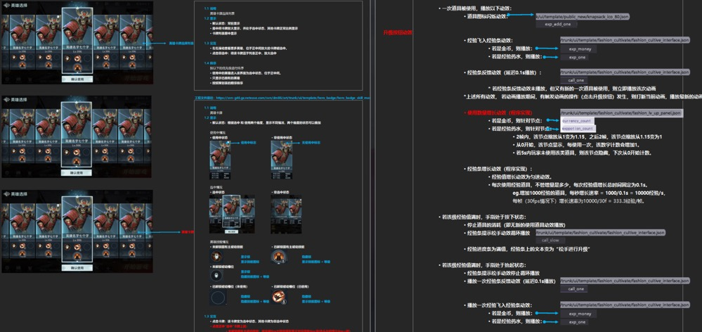

猎手之王（King of Hunters）
2.5D冷兵器大逃杀手游
2.5D perspective battle royale mobile game
0 / 项目简介
作为《猎手之王》手游UX团队负责人，组织协调交互设计师、视觉设计师、动效设计师，设计满足用户需求和商业目标的游戏体验，把控落地品质，为团队工作进度及最终整体用户体验品质负责。
负责核心模块:
·核心UI操作体验设计：核心战斗UI布局及操作体验、主界面UI布局等；
·系统体验优化：英雄培养系统、社交系统等的交互体验设计
·流程性体验优化：新手引导、付费体验设计
职责
UX负责人，主交互设计师
时间
2018.8-2020.10
1 / 设计概念
轻盈通透的UI风格
《猎手之王》采用了轻盈通透的UI设计风格，这是和美术、策划长期磨合的结果。由于美术建模精良，在移动设备中这种次世代级别的美术表现是少有的。我们更希望给玩家传达整体游戏的次时代感和品质感，因此UI设计中采用轻量化和扁平化的处理，更偏向主机的UI设计风格，突出美术模型的表现；另一方面我们在操作细节的反馈上也传达这种通透的理念，如玩家在转动角色模型时，UI也会渐隐成半透明，增加沉浸感。（视觉设计师：张姗姗、赵亚非）
大量的动效反馈
扁平化的设计风格容易让玩家感到重复和平淡，因此我们非常注重动效的使用。大量使用动效加强玩家的沉浸感和反馈，比如荣誉室赛季的段位继承、赛季开篇等设计强有力的开篇动效；另一方面在操作细节上，如按钮点击、状态切换等，也使用微动效增加玩家的反馈感。（动效设计师：莫宗诗）
2 /设计品控
1.快速开发流程
在项目的开发过程中，我们经常会遇到需要快速开发的情景，在时间上的压力非常大。常规的设计流程中，通常需要交互设计师交付交互稿，视觉设计师进行视觉设计，完成视觉效果后动效设计师进行动效设计，最后再程序开发。其中每个职能都需要等前一环节完成才能进行工作，浪费开发时间。因此，我们对设计质量和开发时间进行权衡，设定了一套快速开发的径流程，分成功能线、静态线、动态线三个开发线路。其中功能线的交互设计师在完成交互方案后，一方面视觉设计师进行视觉设计，另一方面交付临时资源给客户端程序，开发基础功能并与服务端进行联调，此时客户端开发和视觉设计并行；视觉设计完成后，一方面动效设计师根据正式资源设计动效，另一方面客户端接入静态的正式UI资源，此时客户端接入正式资源和动效设计并行；最后动效设计完成后交付客户端接入，完成最终的开发。

该流程是快速开发UI，保证设计质量的最短开发路径。以下“蔷薇花境”系统即为核心付费的抽卡系统，涉及到大量的客户端、服务端以及QA测试的工作。采用了这套快速UI开发的流程，从需求提出到最终落地上线我们仅用了一个月时间。
2.设计规范
为了保证设计的落地效果，我们有一套详尽的UX文档。包括视觉设计师的最终设计稿；交互设计师的设计说明，包括状态、交互、排序、定位等规则；动效设计师除了需要动效视频，同时也需要根据动效实现的说明模板，将动效的实现方式传达给客户端程序，以确保动效的最终品质。 
3 /专利创新
在大逃杀吃鸡的品类在市场上的热度已经逐渐退去，同时也存在非常多的竞品。但我们依然做了许多的设计创新，进行了差异化的设计。设计的创新性也体现在我们实际落地了较多的专利方案。其中一个是我对于核心战斗体验中战斗道具替换操作设计的例子。在《猎手之王》中玩家有大量可使用的战斗道具，但快捷使用道具的槽位远小于可使用道具的数量，玩家需要打开背包进行替换，操作效率非常低。这也是大多数吃鸡手游中替换道具及配件的操作痛点。因此该方案的优化思路是，将道具使用和道具切换结合，优先保证玩家正常使用道具的操作，其次减少玩家替换道具的操作路径，同时避免道具替换遮挡玩家视野。

《猎手之王》现在可在App Store 和Android平台中下载。
Our product is now available on App Store and Android.
其他作品
Other Works

作为《猎手之王》手游UX团队负责人，组织协调交互设计师、视觉设计师、动效设计师，设计满足用户需求和商业目标的游戏体验，把控落地品质，为团队工作进度及最终整体用户体验品质负责。Lead User Experience Designer at a mobile game King of Hunters. Manage a team of UI,GUI and VX in designing experiences that achieve both user needs and product's commercial goals. Responsible for UX team scheduling and final UX results of the game.
2.5d Battle Royale Moblie Game

卡内基美隆大学娱乐技术中心的一门课程，共由五轮不同的主题构成，每一轮 学生随机组成五人的队伍，在两周内使用前沿平台和技术来创造交互式体验。
Rapid prototyping for interactive experiences in AR / VR and other emerging technologies
Interactive Experiences in AR / VR

Shadow是一款以黑白矛盾空间为核心机制的平台跳跃游戏。该项目于2014年获得微软创新杯中国区游戏组一等奖，现已上线AppStore/Google Play, 现更名为《时空旅途》。
Shadow is an adventurous and puzzle game, aiming to help people cultivate a new way of thinking. The project won the First prize in the Microsoft Imagine Cup in Games, China.
An Visually Illusion Puzzle Action Platformer

为智力障碍的K-12学生设计的数学教育游戏。通过发现机器人的问题并将其修理，学生们将理解基础的加减法数字运算的概念。
A math educational game aiming to help K-12 students understand addition and subtraction
Math Educational Game for K-12

一款Arduino硬件上搭建和设计的射击游戏。由Arduino Nano芯片、8*8的LED矩阵屏幕、加速规及按钮所搭建的硬件平台，并设计及编写可在该硬件上运行的射击游戏。
A shooting game in Arduino Nano and displayed by 8 x 8 LED matrix
Ardurino Game Displayed by 8 x 8 LED matrix

Flat Icon Design